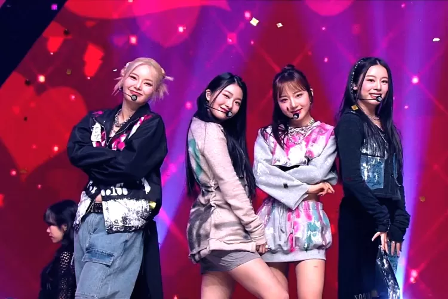

Lisvi Padlilah, Okezone - Oke Celebrity
Kamis 10 Agustus 2023 10:30 WIB
SEOUL - Hasil sidang mediasi antara FIFTY FIFTY dan Attrakt tidak menghasilkan kesepakatan.
Kedua belah pihak yang masing-masing didampingi kuasa hukum bersikukuh pada keinginan masing-masing.
Diberitakan sebelumnya, FIFTY FIFTY dan Attrakt melakukan sidang mediasi gugatan penangguhan kontrak eksklusif
di Pengadilan Pusat Kota Seoul kemarin, Rabu (9/8/2023). Sidang yang berlangsung selama dua jam itu buntu dan tidak
menghasilkan kesepakatan.
Dua personel FIFTY FIFTY yakni Sanna dan Aran muncul dalam persidangan mewakili grupnya bersama pihak pengacara.
Sementara manajemen Attrakt juga hadir didampingi kuasa hukum. Agensi selaku tergugat masih mengharapkan idol
grupnya untuk kembali ke perusahaan tidak mau mengabulkan permintaan penagguhan kontrak.
Sementara pihak FIFTY FIFTY menyebut jika perusahaan selama ini telah gagal memenuhi tanggung jawab sebagaimana
tertera dalam kontrak sebagai label manajemen. Termasuk dalam poin-poin yang disinggung adalah soal pembayaran
dan masalah keuangan, tidak mendukung aktivitas grup, dan gagal dalam menjaga kesehatan grup.“Isu tentang
pembayaran dan keuangan dapat diselesaikan dengan diskusi ketika member kembali ke perusahaan. Selama mereka
mau kembali ke perusahaan, kami akan memastikan untuk mengembalikan imej FIFTY FIFTY dan status normal dengan
dukungan dan sumber daya penuh,” kata perwakilan Attrakt, dikutip dari Allkpop, Kamis (10/8/2023).
Dikarenakan tidak ada kata sepakat, maka pihak pengadilan akan kembali menjadwalkan sidang mediasi sebelum 16 Agustus.
Jika pada persidangan selanjutnya mereka juga gagal menemui kesepemahaman, maka pihak pengadilan akan memutuskan hasil sedang.
Lalu, jika keduanya masih tidak mau menerima keputusan sidang, kasus mereka dapat diajukan ke pengadilan.
Sekadar informasi, FIFTY FIFTY dikenal luas oleh masyarakat berkat lagunya, Cupid yang viral. Mereka kemudian
bermasalah bersama dugaan plagiasi lagu, hak cipta, hingga konflik dengan agensi soal kontrak. Kini, Attrak masih
mencoba menyelesaikan isu tersebut satu-satu.